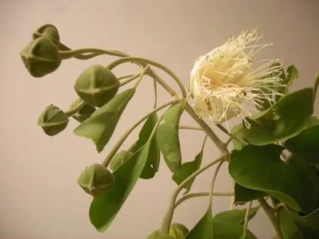

Wild orange
Wild orange is a wild fruit you can forage from November to March in Arid centre and Subtropical east coast. Small, thorny inland tree with dull leaves and round, green-skinned fruit the size of a lime.

When is wild orange in season in Australia?
Wild orange is usually in season November to March. Timing shifts with weather, latitude and altitude.
Where does wild orange grow in Australia?
Wild orange grows in New South Wales, Northern Territory, Queensland, South Australia, Western Australia. Regions: Arid centre, Subtropical east coast.
How do you recognise wild orange?
Small, thorny inland tree with dull leaves and round, green-skinned fruit the size of a lime.
How do you harvest wild orange?
Pick only fully ripe fruit that comes away easily, into a shallow container so it doesn't crush. Leave plenty on the plant for birds and wildlife.
How do you eat wild orange?
Ripe, soft fruit eaten fresh: the pulp tastes of passionfruit and caramel.
How do you store wild orange?
Best fresh.
What is wild orange good for?
Vitamin C.